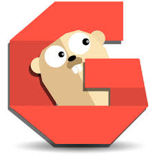

Gogs (Go Git Service) is a source code repository manager for Git, the famed VCS (Version Control System) or SCM (Source Control Management). It's a lightweight software written in Go that can run anywhere (Linux, Mac, ARM, ...). On top of that, Gogs is fully open source unlike GitLab! Thus, this post describes how to host your own private GitHub with Gogs.

Debian Stretch
- Install Debian
Hostname: gogs
Domain name: intra.net
- Install sudo
# apt-get install -y sudo
# adduser UserName sudo
- Update system
# sudo apt-get update && sudo apt-get upgrade
PostgreSQL
- Install PostgreSQL
$ sudo apt-get install -y postgresql postgresql-client libpq-dev
- Open the PostgreSQL interactive terminal
$ sudo -u postgres psql
- Create user and database for Gogs
postgres=# CREATE USER gogs CREATEDB;
postgres=# \password gogs
postgres=# CREATE DATABASE gogs OWNER gogs;
postgres=# \q
Nginx
- Install Nginx
$ sudo apt-get install -y nginx
- Create self-signed certificate
$ sudo mkdir /etc/nginx/tls
$ sudo openssl req -new -x509 -newkey ec -pkeyopt ec_paramgen_curve:prime256v1 -sha256 -days 365 -nodes -out /etc/nginx/tls/gogs.crt -keyout /etc/nginx/tls/gogs.key
$ sudo chmod -R 600 /etc/nginx/tls
Warning: a self signed certificate is for testing purposes only. Don't do that on production environment where a certificate issued by a trusted certificate authority is needed.
- Set Nginx as the reverse proxy for Gogs.
$ sudo nano /etc/nginx/sites-available/gogs
server {
listen 80;
server_name gogs.intra.net;
return 302 https://$server_name$request_uri;
}
server {
listen 443 ssl;
server_name gogs.intra.net;
ssl_certificate /etc/nginx/tls/gogs.crt;
ssl_certificate_key /etc/nginx/tls/gogs.key;
location / {
proxy_set_header X-Real-IP $remote_addr;
proxy_pass http://127.0.0.1:3000;
}
}
- Activate the reverse proxy
$ sudo ln -s /etc/nginx/sites-available/gogs /etc/nginx/sites-enabled/gogs
- Restart Nginx
$ sudo systemctl restart nginx
Git
- Install Git
$ sudo apt-get install -y git
Go
- Install Go
$ sudo apt-get install -y golang-1.7-go
- Create a folder for Go Apps (such as Gogs)
$ sudo mkdir /opt/GoApps
$ cd /opt/GoApps
- Create user to run Go Apps
$ sudo adduser --disabled-login --gecos 'Go Apps User' go
- Set the environment variables
$ export GOROOT=/usr/lib/go-1.7
$ export GOPATH=/opt/GoApps
Gogs
- Download Gogs
$ sudo --preserve-env /usr/lib/go-1.7/bin/go get -u github.com/gogits/gogs
- Build Gogs binary
$ cd /opt/GoApps/src/github.com/gogits/gogs
$ sudo --preserve-env /usr/lib/go-1.7/bin/go build
- Create directory for source code repositories
$ sudo mkdir /var/gogs-repositories
Warning: in production environment, don't forget to add this repository in your backup system.
- Change owner
$ sudo chown go:go -R /opt/GoApps
$ sudo chown go:go -R /var/gogs-repositories
- Create startup script for Gogs
$ sudo nano /etc/systemd/system/gogs.service
[Unit]
Description=Gogs (Go Git Service)
After=syslog.target
After=network.target
After=postgresql.service
After=nginx.service
[Service]
Type=simple
User=go
Group=go
WorkingDirectory=/opt/GoApps/src/github.com/gogits/gogs
ExecStart=/opt/GoApps/src/github.com/gogits/gogs/gogs web
Restart=always
Environment=USER=go HOME=/home/go
[Install]
WantedBy=multi-user.target
- Start the service
$ sudo systemctl enable gogs
$ sudo systemctl start gogs
- Open http://gogs.intra.net:3000 in your browser to configure Gogs
Database type = PostgreSQL
Host = 127.0.0.1:5432
User = gogs
Password = ************
Database Name = gogs
Repository Root Path = /var/gogs-repositories
Run User = go
Domain = gogs.intra.net
Port SSH = empty
Application URL = https://gogs.intra.net
- Disable the access to non-TLS version of Gogs
$ sudo nano /opt/GoApps/src/github.com/gogits/gogs/custom/conf/app.ini
[server]
DOMAIN = gogs.intra.net
HTTP_ADDR = 127.0.0.1
HTTP_PORT = 3000
ROOT_URL = http://gogs.intra.net:3000/
DISABLE_SSH = true
OFFLINE_MODE = false
- Restart Gogs
$ sudo systemctl restart gogs
-
Create the first account (which will be the administrator)
-
Create an Organization for your entity
-
Create teams and define the access right (read, write or admin) on Organization's repositories
-
Add members in the teams
-
Create collaborative repository
What still needs to be done
- Change log repository (As is: /opt/GoApps/src/github.com/gogits/gogs/log)
- Reverse proxy authentication by certificate